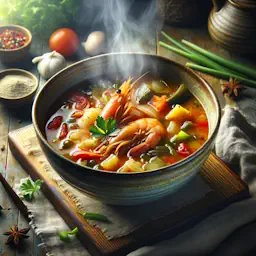

El Tom Yum Goong és una sopa tailandesa clàssica coneguda pels seus sabors intensos i espècies aromàtiques.
Aquesta sopa agra i calenta presenta una barreja temptadora de herba de llimona, galangal i fulles de llima kaffir,
combinada amb gambes sucoses.
"La clau d'un deliciós Tom Yum Goong rau en l'equilibri de sabors - dolç, àcid, salat i picant."
Comenta el xef Somchai.
| Ingredient | Quantitat |
|---|---|
| Herba de llimona | 2 tiges |
| Alfàbrega tailandesa | 1 tasa |
| Fulles de lima de kaffir | 3 fulles |
| Gambes | 500 g |
| Temps de preparació: 20 | |
| Sugeriments de preparació: Serviu amb arròs bullit o te de gessami | |